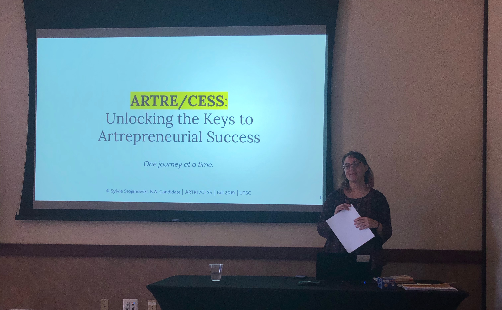

Projects with purpose.

I have a particular interest in exploring the relationship between art and community building, and art and healing.
My approach to research is auto-ethnographic. I enjoy drawing from my personal lived experiences as a professional in the arts and culture sector. I love writing reflections, creating mind-maps, and doodling to process information. The underlying goal of all my research is to make the world a better place.
My latest project:
ARTRE/CESS is an ongoing qualitative research project that investigates the key traits and processes underpinning the lives of “successful” interdisciplinary arts entrepreneurs. The ultimate goal of the project is to help emerging arts entrepreneurs find their footing in creative industries through providing them with a framework to make more strategic career decisions.
Keywords: Arts entrepreneurship, identity, success, self-awareness, interdisciplinary, artists, research as creation, friendship as method
My role: Principal Researcher